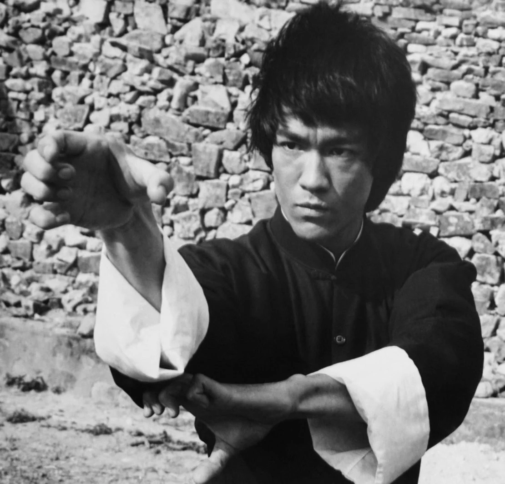

About lee
dragon from the hell.
Bruce was devoted to physical culture and trained devotedly. It was actually his zealousness that led to an injury that was to become a chronic source of pain for the rest of his life. On a day in 1970, without warming up, something he always did, Bruce picked up a 125-pound barbell and did a “good morning” exercise severely injuring his back. After much pain and many tests, it was determined that he had sustained an injury to the fourth sacral nerve. He was ordered to complete bed rest and told that undoubtedly he would never do gung fu again. For the next six months, Bruce stayed in bed. It was an extremely frustrating, depressing and painful time, and a time to redefine goals. It was also during this time that he did a great deal of the writing that has been preserved. After several months, Bruce instituted his own recovery program and began walking, gingerly at first, and gradually built up his strength.
Their discography and adjacent work has also referenced literature, philosophy and psychological concepts, and includes an alternate universe storyline.
